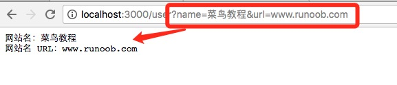

Node.js GET/POSTリクエスト
多くの場面で、サーバーはユーザーのブラウザとやり取りする必要があります。例えば、フォーム送信です。
フォーム送信は通常、GET/POST リクエストでサーバーに送信されます。
この章では、Node.js の GET/POST リクエストについて紹介します。
GETリクエストの内容を取得
GET リクエストはパスに直接埋め込まれるため、URL は完全なリクエストパスであり、以下が含まれます：?後続の部分。したがって、後続の内容を手動で解析して GET リクエストのパラメータとすることができます。
node.js では、URL コンストラクタを使用してリクエストの URL を解析できます。
URL オブジェクトは、Node.js で URL を解析・操作するための標準的なツールです。プロトコル、ホスト名、パス、クエリパラメータなどの各構成要素にアクセスして変更するための便利なインターフェースを提供します。
例
ブラウザでアクセス：http://localhost:3000/user?name=菜鸟教程&url=www.runoob.comその後、返された結果を確認します：

URLのパラメータを取得
url.parse メソッドを使用して URL 内のパラメータを解析できます。コードは次のとおりです：
例
ブラウザでアクセス：http://localhost:3000/user?name=菜鸟教程&url=www.runoob.comその後、返された結果を確認します：

URLオブジェクト
以下は URL オブジェクトのプロパティとメソッドです：
| プロパティ/メソッド | 説明 | 出力例 |
|---|---|---|
| href | 完全な URL 文字列 | "http://example.com:8080/path?foo=bar#section" |
| origin | URL のオリジン。プロトコル、ホスト名、ポート番号（存在する場合）を含む | "http://example.com:8080" |
| protocol | URL のプロトコル部分。末尾に「:」が付きます: | "http:" |
| host | ホスト名とポート番号 | "example.com:8080" |
| hostname | ホスト名（ポート番号を含まない） | "example.com" |
| port | ポート番号（指定されている場合） | "8080" |
| pathname | パス名部分 | "/path" |
| search | クエリ文字列部分。先頭の「?」を含む? | "?foo=bar&hello=world" |
| searchParams | URLSearchParamsクエリパラメータを操作するためのオブジェクト | { foo: 'bar', hello: 'world' } |
| hash | アンカー部分。「#」を含む# | "#section" |
| メソッド | 説明 | サンプルコード | 出力例 |
|---|---|---|---|
| get(name) | 指定された名前のクエリパラメータ値を取得します | myUrl.searchParams.get("foo") | "bar" |
| append(name, value) | クエリ文字列に新しいパラメータを追加します | myUrl.searchParams.append("newKey", "newValue") | ?foo=bar&newKey=newValue |
| set(name, value) | クエリ文字列内の指定された名前のパラメータを設定します（既に存在する場合は更新します） | myUrl.searchParams.set("foo", "newBar") | ?foo=newBar |
| delete(name) | 指定された名前のクエリパラメータを削除します | myUrl.searchParams.delete("foo") | ?hello=world |
| has(name) | クエリ文字列に指定された名前のパラメータが存在するかどうかを判定します | myUrl.searchParams.has("foo") | true 或 false |
| forEach(callback) | クエリパラメータのキーと値のペアを反復処理し、コールバック関数を実行します | myUrl.searchParams.forEach((v, k) => console.log(k, v)) | キーと値のペアの出力 |
| toString() | クエリパラメータを文字列形式に変換します。URL の再構築に適しています | myUrl.searchParams.toString() | "foo=bar&hello=world" |
例
console.log(myUrl.pathname); // 出力: /path
console.log(myUrl.searchParams.get("foo")); // 出力: bar
myUrl.searchParams.append("newKey", "newValue");
console.log(myUrl.href); // 出力: http://example.com/path?foo=bar&hello=world&newKey=newValue
POSTリクエストの内容を取得
Node.js で POST リクエストを処理するには、通常 http モジュールを使用してリクエストボディ内のデータを受信する必要があります。POST リクエストデータは GET リクエストのように URL に含まれるのではなく、リクエストボディとして送信されます。したがって、Node.js で POST データを受信する場合、リッスンして処理する必要があります：requestrequest オブジェクトのdata 和 enddata イベント。
- データイベントをリッスン
datadata イベント：データチャンクがサーバーに到達すると、datadata イベントがトリガーされ、データチャンクがコールバックの引数として渡されます。 - end イベントをリッスン
endend イベント：リクエストボディ全体の受信が完了すると、endend イベントがトリガーされ、この時点で完全な POST データを処理できます。
例
// HTTPサーバーを作成
http.createServer((req, res) => {
// リクエストメソッドが POST かどうかを確認
if (req.method === 'POST') {
let body = '';
// data イベントをリッスンし、データをチャンク単位で受信
req.on('data', (chunk) => {
body += chunk; // 受信したデータチャンクを累積
});
// end イベントをリッスンし、データ受信完了
req.on('end', () => {
// 受信した POST データを出力
console.log('Received POST data:', body);
// レスポンスヘッダーとコンテンツを設定
res.writeHead(200, { 'Content-Type': 'text/plain' });
res.end('POST data received successfully!');
});
} else {
// POST 以外のリクエストの処理
res.writeHead(405, { 'Content-Type': 'text/plain' });
res.end('Only POST requests are supported.');
}
}).listen(3000, () => {
console.log('Server is running at http://localhost:3000');
});
コードの説明：
- リクエストメソッドの確認：req.method によって
req.method === 'POST'リクエストタイプが POST かどうかを判定します。 - データの受信：data
req.on('data')イベント内でデータチャンクを累積し、完全なデータボディを形成します。 - 受信完了：end
req.on('end')イベント内で完全な POST データを処理します。 - クライアントへの応答：データの受信と処理が完了したら、クライアントにレスポンスを送信します。
curl コマンドを使用して POST リクエストをテストできます：
curl -X POST -d "name=example&age=25" http://localhost:3000
JSONデータの処理
POST リクエストが JSON データを送信する場合、req.on('end')end イベント内で受信したデータをオブジェクトとして解析できます：
req.on('end', () => {
const parsedData = JSON.parse(body); // 将 JSON 字符串解析为对象
console.log('Received JSON data:', parsedData);
res.end('JSON data received successfully!');
});
querystringモジュール
querystring モジュールは、URL クエリ文字列と POST リクエストのデータを処理するために使用されます。
application/x-www-form-urlencoded でエンコードされた POST リクエストデータの場合、querystring モジュールはリクエストボディを解析し、JavaScript オブジェクトに変換して、アクセスと操作を容易にします。
クライアントが送信する POST リクエストデータの形式が application/x-www-form-urlencodedapplication/x-www-form-urlencoded（例：フォーム送信）の場合、データ形式は次のようになります：name=example&age=25データを受信した後、querystring.parsequerystring.parse メソッドを使用してデータをオブジェクトに解析できます。
基本構文の説明
次の例では、フォームを POST で送信し、データを出力します：
例
実行結果 Gif デモ：

クリックしてノートを共有
<p style="font-size:14px;">メモはこの記事の内容の拡張である必要があります！</p><br> <p style="font-size:12px;"><a href="../tougao.html" target="_blank">記事の投稿は、ここをクリックしてください</a></p> <p style="font-size:14px;"><a href="../w3cnote/runoob-user-test-intro.html" target="_blank">登録招待コードの取得方法</a></p> <h3 class="text-muted"><i class="fa fa-info-circle" aria-hidden="true"></i> メモを共有する前に<a href=";.html" class="runoob-pop">ログイン</a>してください！</h3> <p><a href="../w3cnote/runoob-user-test-intro.html" target="_blank">登録招待コードの取得方法</a></p>